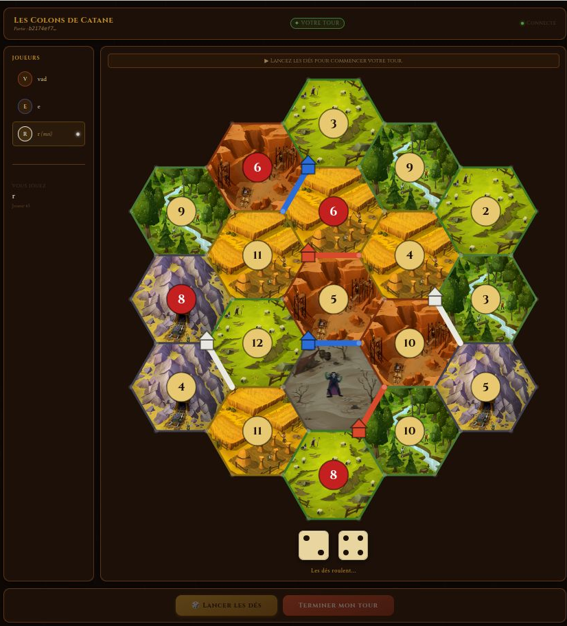

Web-designed Catan - Team project
Full-stack multiplayer board game platform using React, JavaScript, Spring and REST APIs. Designed Java backend logic and multiplayer interactions in a collaborative development environment. I've worked on the frontend of the game and set up of websockets.
